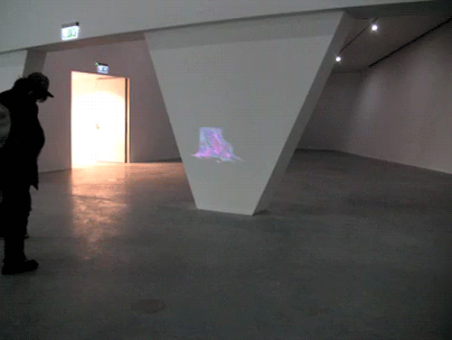

INSTALLING AT THE EYE INSTITUTE
AMSTERDAM, NL 2012
At once relational and gestural animated GIFs are small digital movements and moments existing on the Internet. The Animated GIF format of moving images can be used in conversation to communicate simple ideas in response to other people, other GIFs/images or even websites. They can be short samples, fractions of events or hypnotizing, timeless loops.
[STREET_TEAM] was curated and performed by Alfredo Salazar-Caro, and included the works of 14 artists from around the world. Animated .Gifs and short videos were projection bombed at a number of institutions including the Tate Modern in London, Museum Boijmans van Beuningen in Rotterdam, BOZAR in Belgium and the Museo Soumaya in Mexico City among others. These guerrilla installations call upon the spirit of graffiti functioning as temporary mash-ups of institutionally sanctioned work and the web-art underground.
This project was made possible thanks to a travel grant by the John W. Kurtich Foundation
Questions?
info@str33t.net